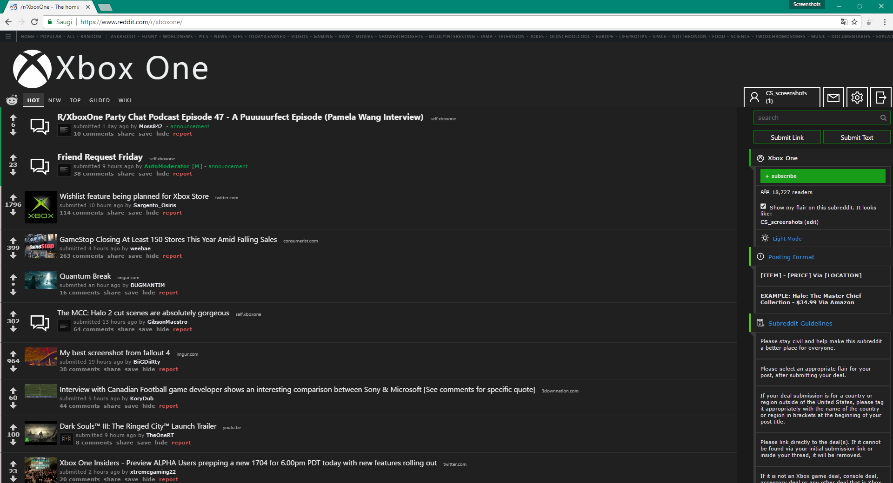
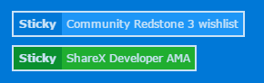

ClearShift features
Night mode
ClearShift Night Mode supports both RES night mode and CSS night mode.
Header Stickies
Header stickies code is already in the main code of ClearShift so all you have to do is use this template, modify its text, link and then simply put it into sidebar through "subreddit settings" section. Example of these stickies also provided in sidebar.css file.
#Sticky - Classic blue sticky
#Stickyg - Green color sticky for important announcements or moderator posts
#Update - Blue stickie with word "Update" instead of sticky, can be used for follow up threads,
software updates
Interactive sidebar
Expandable sections on hover sections useful for rules, related subreddits section or even flair toggles if you have them on your subreddit. It's really easy to set up, all you need is put three hash tags and text after them ###General rules, expandable section example shown below.
UX improvements spotlight
New and OP comments highlighted for moderators and Reddit gold users Easier and more intuitive comments collapsing
Easier and more intuitive comments collapsing

And lots of other smaller additions.